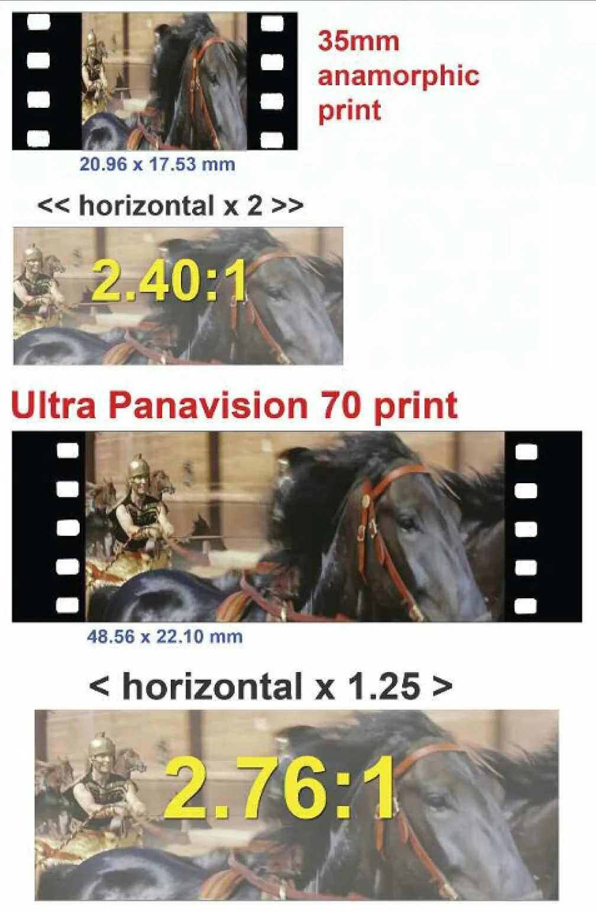
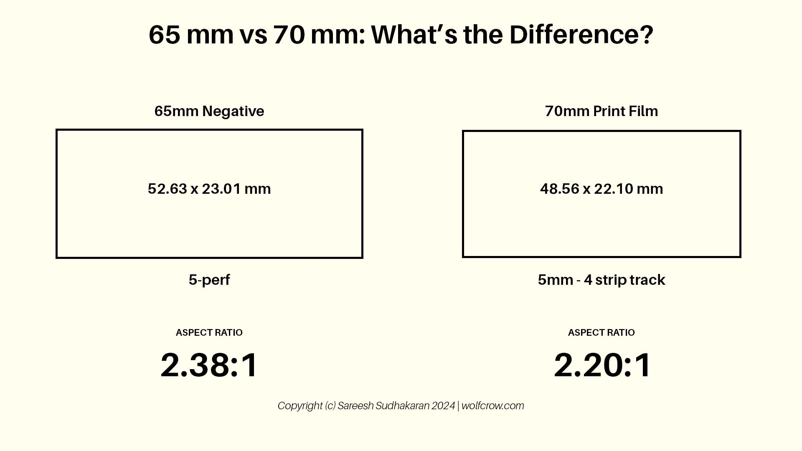
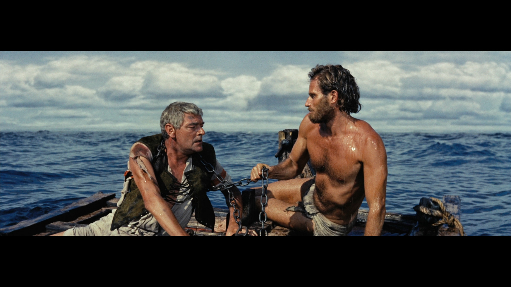
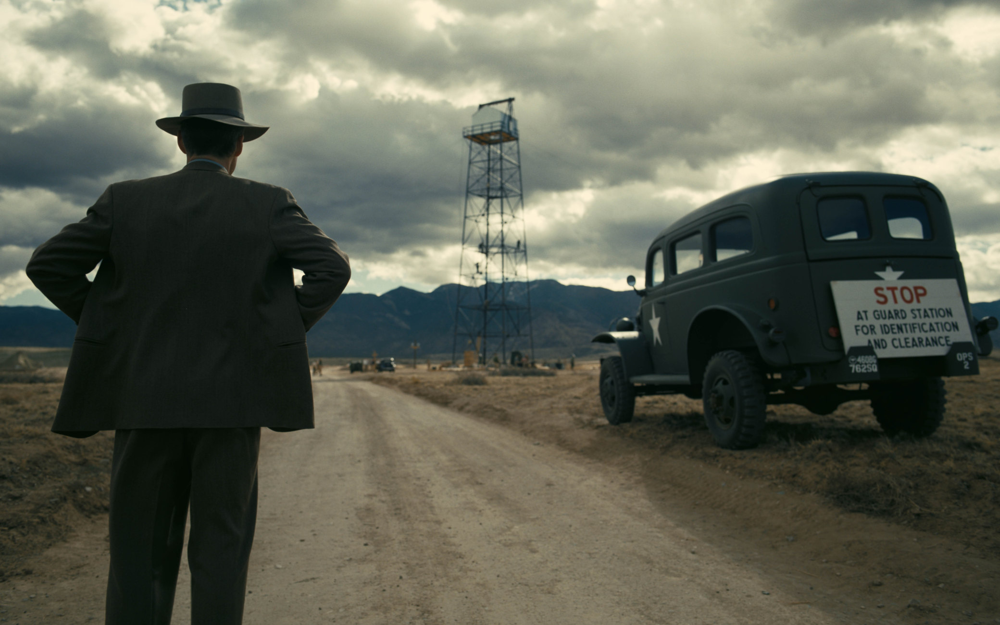
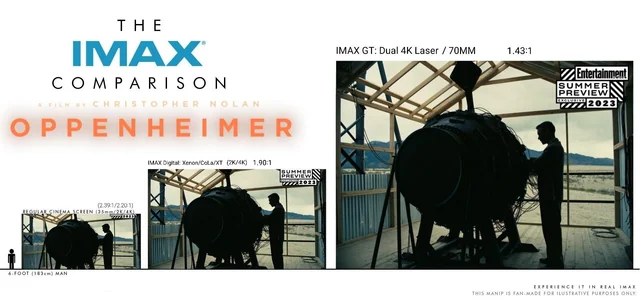

Ultra Wide Epics

70mm film is a large-format motion picture film that provides a mindblowing high resolution and image clarity.
It became popular for Epics and special event films, offering a massive feeling that smaller formats could not match.
70mm prints are usually from 65mm negatives, giving projectionists more room for soundtracks and image detail.
Exceptional use of this format is in films like Cleopatra, 2001: A Space Odyssey, and Ben-Hur.
65mm and 70mm

Motion picture cameras typically use 65mm film negatives, which are then printed onto 70mm release prints for projection.
The extra 5mm accommodates the magnetic soundtracks or digital sound encoding on the print, while preserving the full resolution captured on the negative.
This process preserves immersive scale of 70mm presentations while making sure of having the best audio possible.
Standard 70mm Film

Standard 70mm film uses a horizontal or vertical layout depending on the camera system, with 5 perforations per frame.
It provides unmatched sharpness, detail, and depth, making it ideal for epic storytelling.
Films shot on standard 70mm include Lawrence of Arabia, Fitzcarraldo, and West Side Story.
Ultra Panavision 70

Ultra Panavision 70 is a special variation of 70mm with anamorphic lenses that stretch the image horizontally during filming.
This technique creates an ultra-wide aspect ratio of up to 2.76:1, delivering breathtaking panoramic compositions.
Classic examples include Ben-Hur (1959), The Hateful Eight (2015), and part of Sinners(2025).
IMAX 70mm

IMAX combines large-format 70mm film with proprietary projection and audio technologies, delivering a vastly
larger than standard 70mm and the most immersive image available on cinema. IMAX cameras often use 65mm or 70mm negatives, but the
frame is oriented horizontally, allowing up to 15 perforations per frame for extreme resolution calculed at around 18k!
No other type of format or projection type can come close to IMAX.
The curved IMAX screen and enhanced sound system further immerse the audience, making films like
Interstellar, Dunkirk, and Oppenheimer visually Impecable.
70mm vs IMAX
While standard 70mm film already provides incredible sharpness, IMAX pushes the format even further making it not only not only panoramic but it makes it fill the entire field of view.
because IMAX uses a larger film frame and a more immersive projection system.
This results in:
- Larger image area and around 18k resolution
- More vertical information visible on screen(black bars from the top and bottom are used now)
- Enhanced immersive sound systems
a few big Filmmakers often choose IMAX for epic sequences to emphasize scale and audience immersion.
Digital vs Film IMAX

IMAX digital uses high-resolution digital cameras and projectors with a lases system that projects two 4k images images, while traditional IMAX relies on large-format 65/70mm film.
Key differences are:
- Resolution: Film IMAX can capture up to 18K equivalent in detail, while digital IMAX usually ranges between 4K–8K depending on the camera.
- Aspect Ratio: Film IMAX often allows 1.43:1, giving more vertical image; digital IMAX is usually 1.90:1 or 1.78:1, but in some cases there can be a digital projection that is 1:43:1 which will give you the same aspect ratio as film.
- Post-Production: Digital IMAX is easier to edit, color grade, and integrate visual effects since it's a digital camera at the end.
- Cost & Flexibility: Film IMAX is expensive and heavy to shoots. when filming it produces a very loud sound resembling a lawn mower, this because of the shutter taking the frames on the film 24 times per second.